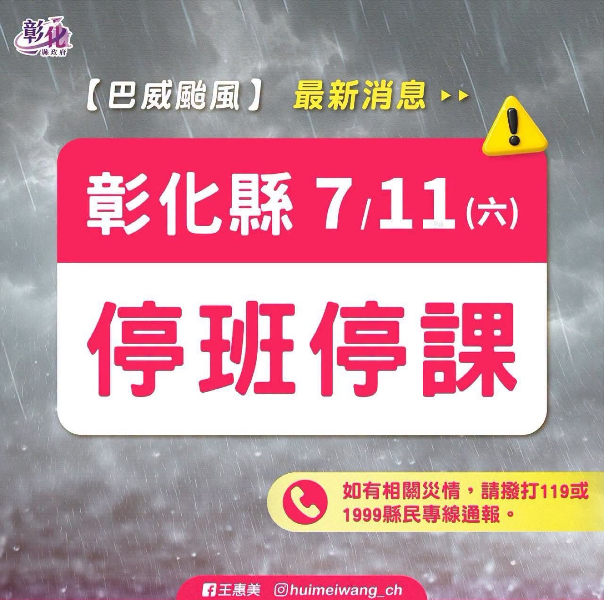
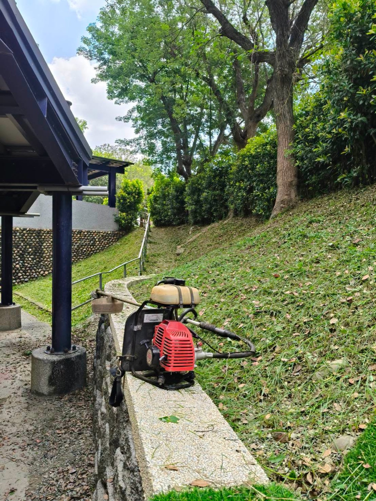
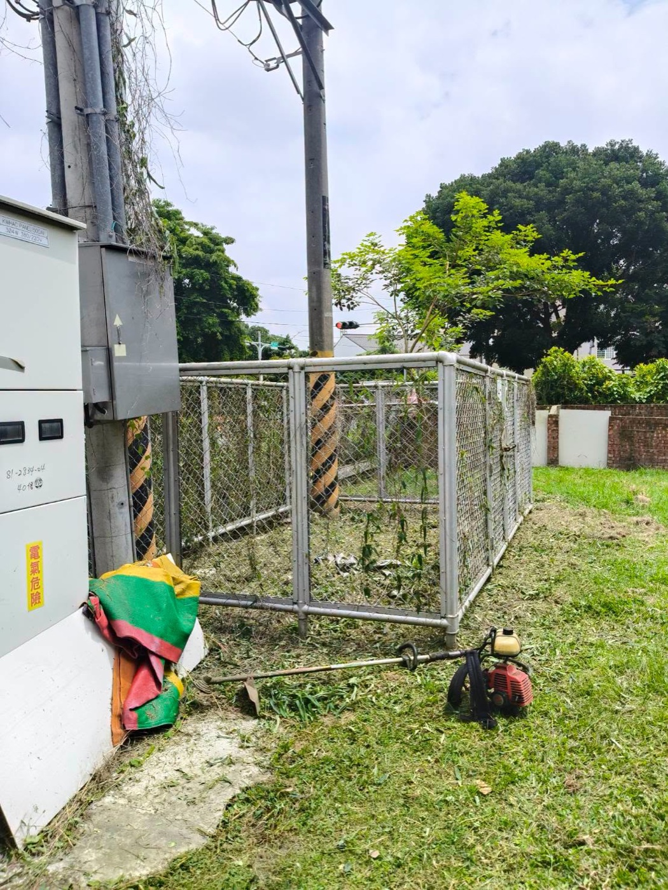

When a typhoon is on its way, Hsinmin Elementary is already in action. Long before the wind and rain arrive, our dedicated school grounds staff — led by the hardworking Brother Xi-Ping (錫平大哥) of the general affairs office — has been quietly and carefully preparing the campus to keep every student safe.
Since early morning, Brother Xi-Ping has been moving through every corner of the campus with his grass cutter. From overgrown weeds along the fences and slopes, to fallen leaves and debris blocking the drainage channels — every spot is tended with care, making sure water can flow freely and the environment stays tidy and safe.
These may look like ordinary tasks. But every mowed patch of grass, every cleared drain, and every careful inspection can prevent flooding, falling branches, and mosquito breeding grounds. At Hsinmin, environmental education is not just a subject in the classroom — it is practiced every single day by the people who care for our campus.
Environmental safety is also an act of love: love for our students, love for our teachers, love for the community that gathers here each day.
❤ A heartfelt thank-you to our general affairs team.
❤ Special appreciation to Brother Xi-Ping, who faces the blazing sun every day — quietly, steadily, and with complete dedication — so that our children's school is a safer, more beautiful, and more peaceful place.
🌿【風雨未至，守護先行｜新民國小防颱整備中】🌧️
颱風將至，新民國小的守護行動已經悄悄展開。校園裡，總務處的錫平大哥一早便揹起割草機，穿梭在校園每一個角落。從圍籬旁的雜草、邊坡植栽，到排水溝周邊的落葉與雜物，一步一步細心整理，只為了讓排水更順暢、環境更整潔，也讓孩子們擁有更安全的學習空間。
這些看似平凡的工作，其實都是守護校園的重要力量。因為每一次除草、每一次巡檢、每一次清理，都可能降低豪雨積水、樹枝掉落或病媒蚊孳生的風險。
在新民國小，防災不是等到風雨來了才開始，而是平時就把每一個細節做到最好；環境教育，也不只是課堂上的知識，更是每天身體力行的實踐。
❤ 感謝總務處團隊的用心付出。
❤ 特別謝謝錫平大哥不畏烈日、默默守護校園，因為有您們，孩子們的校園才能更加安全、美麗又安心。
Words About Safety & Preparation英語學習角 · 和安全與準備有關的小單字
Six key words — tap 🔊 to listen, then try the conversation and quiz.
六個關鍵字，點 🔊 聽發音，再試試對話和小考。
情境：兩位同學注意到學校人員在為颱風做準備。